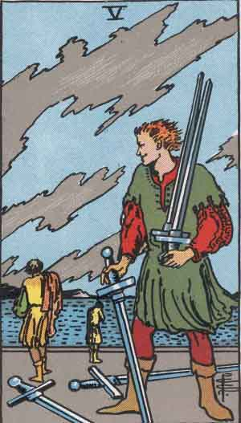

Main | Arcana | Cups | Pentacles | Swords | Wands
Five of Swords

Upright
Self-interest, Survival Mode, Defeat
- Be careful that winning doesn't put you in danger of losing a relationship or your reputation.
- Never let a fear of being wrong be led by a fear of losing control. Your ego could be behind all of it.
- Beware your victory doesn't isolate you from others. An end to a battle is not the battle's end.
- Is the price of winning worth the reward? Would accepting defeat be more acceptable?
- Look at your own way with a critical eye. Fine-tune the places that need improvement.
- Pass on what others truly need to better their own condition.
Reversed
Amend, Conflict, Forgive and Forget, Open to Change
Tension drains your magic. Release the tension, protect your magic. Your opinions are validated by YOURself. Go in and move out. Be authentic. Who do you need to be right with? Begin negotiations. Disregard the opinions and see the human in front of you. Not everyone will share your joy of living your life. To thine own self be true, in a loving and caring way.
- Win as if you were use to it, lose as if you enjoyed it for a change - Ralph Waldo Emerson